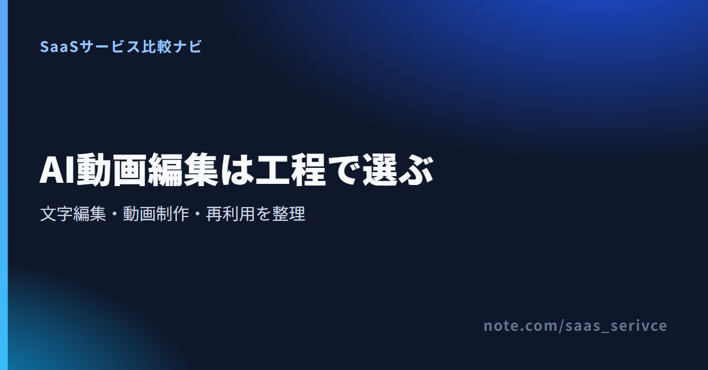
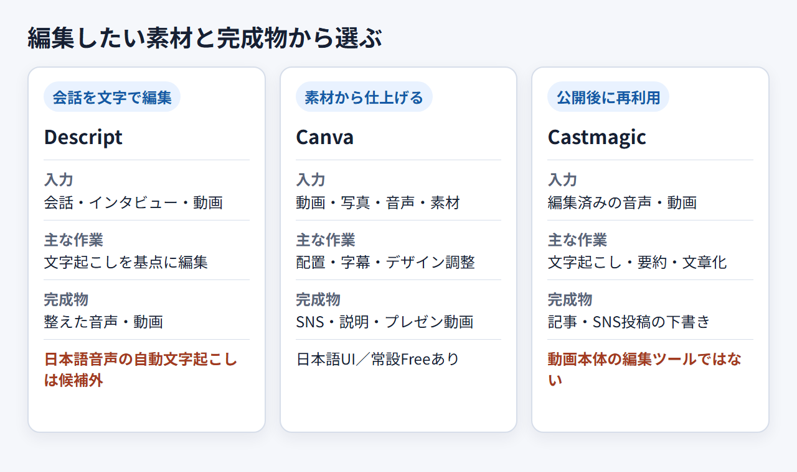
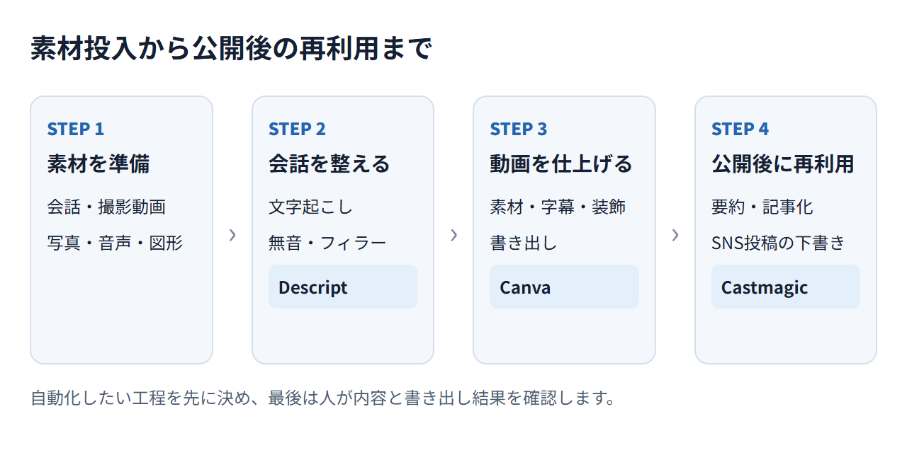
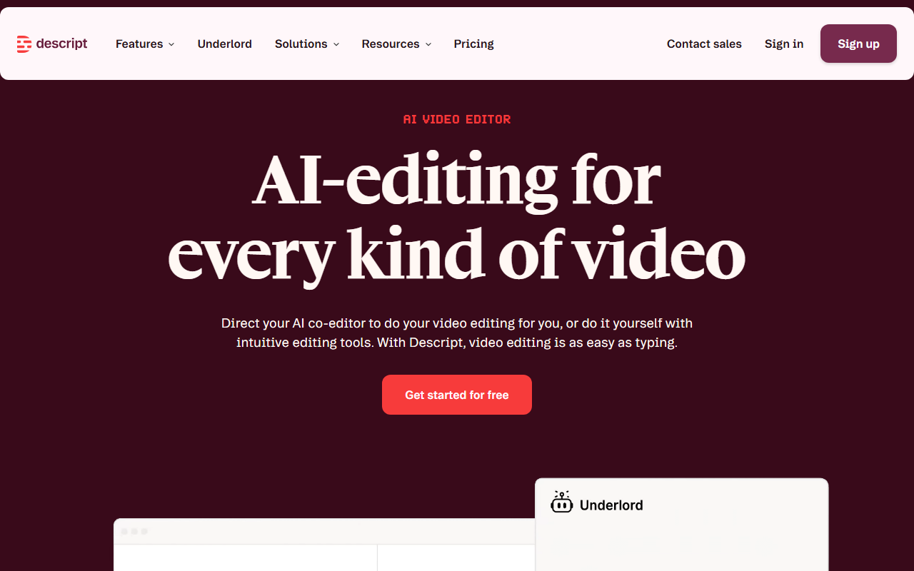
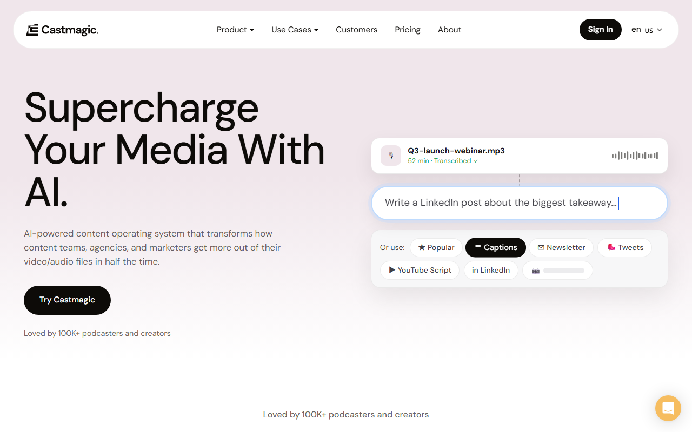
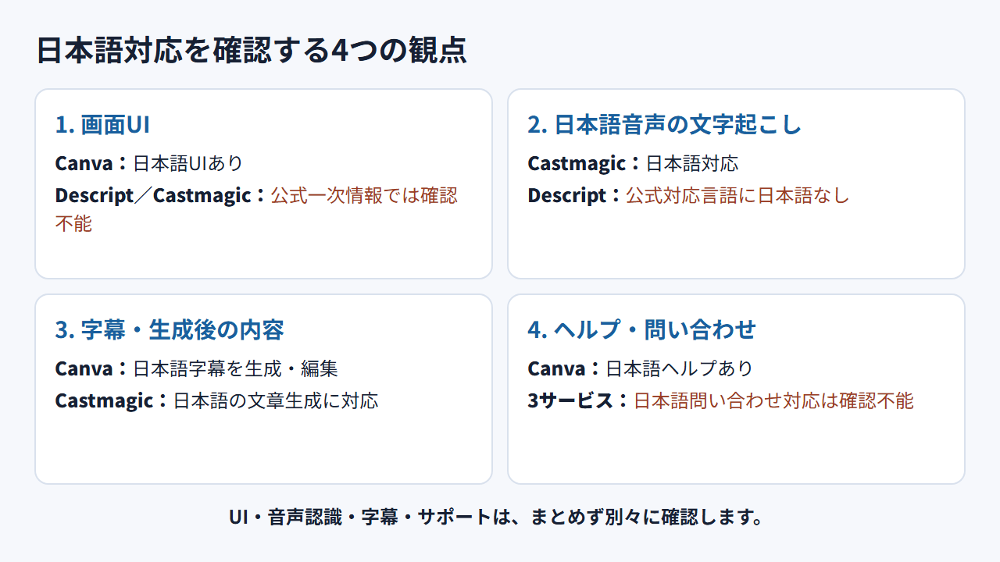
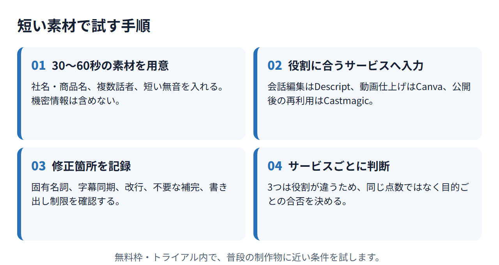

AI動画編集の工程別サービス3つ【2026年】文字起こし・日本語・無料枠で選ぶ
AI動画編集ツールは、会話のカットや字幕作成をAIで補助するサービスです。素材の配置を助けるものや、完成した動画を記事やSNS投稿へ展開するものもあります。
この記事では3サービスの役割を分け、無料枠や料金、契約前の注意点を紹介します。
AI動画編集関連サービス3つの早見
- Descript：月1メディア時間無料／1人単位
- Canva：無料／Pro年11,800円・1人
- Castmagic：無料体験／月19ドル〜（年払い換算）
- 日本語UI：Canvaは対応
迷ったら、英語など公式対応言語の会話編集にはDescriptがおすすめです。カード不要で月1メディア時間を試せます。
リンク先では、無料で始める方法とAI動画編集の主な機能が分かります。
AI動画編集ツールは自動化したい作業で選ぶ
「AI搭載」という言葉だけで選ばず、時間を減らしたい作業を先に決めます。 素材の取り込みから書き出しまで、すべてを自動化できるとは限りません。


文字起こし・無音・フィラー処理を任せたい
会話を収録した音声や動画を、文字起こしから編集したい場合の選択肢です。ただし、自動文字起こしは日本語に公式対応していません。公式対応言語の素材を使い、話者の区別や残したい間をどこまで直せるか試します。
テンプレート・素材・字幕を一つの画面で整えたい
撮影素材に写真や図形を加えたいなら、Canvaが候補です。文字や音声も同じ画面で重ねられます。Captionsは日本語音声から字幕を作り、生成後の修正にも対応。試用時は、字幕の改行と表示時間を見ます。フォントも使いたいものが選べるか試してください。
完成後に記事・要約・SNS投稿へ再利用したい
Castmagicに入力するのは、編集を終えた音声や動画です。文字起こしをもとに要約や投稿文を作ります。動画本体のカットや字幕調整はできません。公開後の記事やSNS投稿を作る手間を減らしたい場合に向きます。出力された文章は、事実関係と発言者の意図に沿っているかを確かめてから使います。
作業別に選ぶAI動画編集関連サービス3つ
3サービスは、同じ作業を置き換える競合ではありません。 会話の編集、動画の見た目の調整、公開後の再利用のうち、任せたい作業に合うものを選びます。
Descript：会話や動画を文字起こしベースで編集したい人向け

英語の公式画面には「AI VIDEO EDITOR」と表示され、無料開始ボタンもあります。
無料プランでは、カード登録なしで月1メディア時間を使えます。まず会話を文字で直す編集を試し、有料プランが必要か判断できます。
翻訳字幕と吹き替えは日本語に対応し、AIスピーカーでも日本語を扱えます。ただし、自動文字起こしの公式対応言語に日本語は含まれません。UIと日本語サポートの有無も、公式一次情報では不明。翻訳字幕に対応していても、日本語音声を自動で文字にできるわけではありません。日本語音声の自動文字起こしが必要なら、候補から外します。
無料枠では、公式対応言語の音声を使って文字起こし後の編集手順を試せます。
Canva：素材作成から動画の仕上げまで一つの画面で進めたい人向け

日本語の料金画面には、無料、Canvaプロ、Canvaビジネスが並んでいます。
Canvaは日本語UIに対応。常設の無料プランには5GBのクラウドストレージがあります。AIは月ごとの共有利用枠で管理され、Freeでは標準AIまたはプレミアムAIを最大20回使えます。処理内容によっては、実際の利用回数が少なくなることもあります。枠は毎月リセットされる仕組みです。
日本向けの料金ページは円建てです。JCBを含む主要カードとPayPalが使えます。PDF請求書の取得方法と、設定画面からの解約方法も案内されています。必要な形式で書き出せるかは、無料プランで試します。
無料プランでは、使いたい素材やAI利用枠、希望する書き出し形式を試せます。
Castmagic：完成した音声・動画を記事やSNS投稿へ再利用したい人向け

公式画面では、音声ファイルからLinkedIn投稿や字幕を作る流れが紹介されています。
Castmagicは、完成した音声や動画を文字起こしし、記事やSNS投稿へ展開する補助サービスです。日本語を含む60言語以上で、文字起こしとコンテンツ生成に対応しています。
公式サイトに無料トライアルの案内はありますが、常設の無料プランは見当たりません。トライアル期間は非公開。UIと日本語サポートの有無も、公式一次情報では不明です。動画のカットや字幕位置の修正は対象外。完成後の記事やSNS投稿を作る手間を減らしたい人向けです。
リンク先では、文字起こし後に作れるコンテンツとトライアル条件が分かります。
日本語対応はUI・文字起こし・字幕を分けて見る
日本語UIがあっても、日本語音声を文字起こしできるとは限りません。 逆に、日本語を文字起こしできても、画面や問い合わせ窓口が日本語とは限りません。
画面UIとヘルプの表示言語を見る
- Descript：UIと日本語サポートは公式情報では不明。翻訳字幕などの対応言語とは分けて考える
- Canva：日本語UIと日本語のヘルプページあり。メールやチャットの日本語対応は公式情報では不明
- Castmagic：日本語は文字起こし・生成コンテンツの対象。UIと日本語サポートは公式情報では不明
画面の言語だけで判断せず、困ったときに読めるヘルプがあるかも見ておきます。請求や解約の説明へ迷わずたどり着けるかも試してください。
日本語音声・固有名詞・複数話者を短い素材で試す
自動文字起こしの対応言語に日本語がないため、Descriptの日本語対応は前提にできません。Castmagicは、日本語の文字起こしとコンテンツ生成を案内しています。CanvaのCaptionsなら、日本語音声から字幕を作り、生成後の修正も可能です。
CanvaとCastmagicには、社名や人名を含む短い日本語素材を入れ、複数話者の会話も加えます。Descriptでは公式対応言語の素材を使い、普段の制作物に近い条件で修正量を見ます。
字幕の改行・同期・フォントは人が見る
Canvaで日本語字幕を作ったら、改行位置と音声との同期を見ます。点検する項目は、フォントと固有名詞。Castmagicでは、文字起こしから作られた文章を読みます。事実関係に誤りがなく、使う場面に合っているかが判断の基準です。

無料枠と料金は利用時間・AI回数・更新単位で見る
常設無料プラン、無料トライアル、AI利用枠は別物です。 無料で試せる範囲と、有料移行後の請求単位を分けて見ます。以下の円額は1ドル=158円換算（執筆時点の目安。為替で変動）です。
Descriptは無料枠のメディア時間を見る
- 無料条件：カード不要の常設無料プラン、月1メディア時間
- Hobbyist：年払い換算US$16/人/月（約2,528円）、月払いUS$24
- Creator：年払い換算US$24/人/月（約3,792円）、月払いUS$35
- Business：年払い換算US$50/人/月（約7,900円）、月払いUS$65
- 請求通貨：プラン額はUSD。地域によりチェックアウトで現地通貨を選べる場合あり
無料枠は月1メディア時間。有料3プランは、価格に加えて必要なメディア時間とAIクレジットを申込画面で比べます。
Canvaは無料プランとAIの月間共有利用枠を分ける
- 無料条件：常設のFree。AIは月間共有利用枠で最大20回
- Pro：日本向け年額11,800円/人。グローバル表示は年額US$144
- Business：日本向け年額18,800円/人。グローバル表示は年額US$250/人
- Enterprise：個別見積もり
- 請求通貨：日本向け表示はJPY、グローバル表示はUSD
無料プランの有無と、AIを使える回数は別に管理されます。AI処理の複雑さによって消費量が変わるため、月間枠だけでは制作本数を決められません。
Castmagicはトライアル条件とライブラリ時間を見る
- 無料条件：常設無料プランは公式情報に記載なし。無料トライアルはあるが、期間は非公開
- Hobby：年払い換算US$19/月（約3,002円）、年額US$239
- Starter：年払い換算US$48/月（約7,584円）、年額US$579
- Team：年払い換算US$139/月（約21,962円）、年額US$1,669。5席込み
- Business & Scale：US$699/月から（約110,442円）
- 請求通貨：USD表示
ライブラリ時間はプランごとに蓄積されるため、必要な時間をHobbyとStarterで比べます。複数人で5席を使うなら、Teamが候補です。
Descriptでは、無料枠のメディア時間と月払い・年払いの差が分かります。
Canvaでは、無料プランと日本向けの円建て料金が分かります。
Castmagicでは、トライアル条件とプランごとのライブラリ時間が分かります。
日本から契約する前に支払い・請求書・解約を調べる
日本から契約するなら、支払いと解約の条件を先に調べます。 見落とせないのが、請求通貨と請求書の取得方法。税務上の扱いや仕入税額控除は、契約主体と請求書の内容を税理士に見せて相談してください。
DescriptはUSD請求とEnterpriseの請求書条件を見る
- 支払い：セルフサービスはクレジットカードとLink by Stripe。地域・通貨によりApple PayやGoogle Payなどが表示される場合あり
- 通貨：プラン額はUSD。地域により現地通貨を選択でき、請求書には支払額と適用レートも記載
- 請求書：請求情報とTax IDを請求確定前に登録可能。請求書払いはEnterpriseのみ
- 解約・返金：設定画面から解約またはFreeへ変更可能。プラン購入は請求日から48時間以内、追加Editor席は7日以内に返金申請できる。追加Media MinutesとAI Credits、途中解約の未使用期間は返金対象外
Canvaは円建て料金・JCB・PDF請求書を見る
- 支払い：American Express、Diners、Discover、JCB、Mastercard、Visa、PayPal
- 通貨：日本向けページはJPY
- 請求書：設定画面からPDFを取得可能。画面上の保管期間は18か月
- 解約：設定画面から手続きでき、請求期間の終了までは有料機能を利用可能。終了後はFreeへ移行
返金は原則不可ですが、Canvaが個別審査で応じる場合があります。アプリストア経由で契約した場合、解約と返金は各ストアで手続きします。
Castmagicは不明な決済・請求条件を契約前に尋ねる
- 支払い：カードブランドと日本発行カードの可否は公式情報では不明。申込画面またはサポートで尋ねる
- 通貨：公式料金ページはUSD表示
- 請求書：取得方法は公式情報では不明。契約前にサポートへ尋ねる
- 解約：アカウント設定またはサポートへの連絡で手続きし、請求期間末まで利用可能。原則返金不可で月途中の按分返金なし
30〜60秒の素材で失敗を減らす試し方
日本語の文字起こしや字幕の精度は、普段に近い短い素材で試します。 公開レビューで高精度と評価されていても、自社名や専門用語を正しく扱えるとは限りません。比較材料は、修正量と書き出しまでの手順です。
日本語の固有名詞・複数話者・無音を含む素材を用意する
30〜60秒程度の素材に、社名と商品名を入れます。二人以上の会話と短い無音も含めてください。サービスごとに用意する素材は次のとおりです。
- Descript：公式対応言語で収録した素材
- Canva：日本語字幕を付けたい素材
- Castmagic：編集済みの動画（機密情報は除く）
誤認識・フィラー・字幕同期・改行を記録する
見る項目はサービスごとに異なります。
- Descript：文字起こしと音声編集の連動
- Canva：日本語字幕の固有名詞・同期・改行
- Castmagic：記事やSNS投稿の事実誤認と不要な補完
3つは作業が違います。同じ点数では比べず、サービスごとに判断します。
書き出し制限と再利用までの手順を試す
DescriptとCanvaでは、必要な形式で書き出せるかを試します。無料枠の上限に収まるかも見てください。Castmagicを試すのは、完成後の動画から記事やSNS投稿も作る場合だけ。動画編集とは別の基準で判断します。

AI動画編集ツールのよくある質問
無料利用、日本語対応、使える端末は、サービス名だけでは判断できません。 契約前に、自分が使う機能と素材で試すのが確実です。
無料だけで動画編集を続けられる？
Descriptには月1メディア時間の無料枠があり、Canvaには常設のFreeがあります。Castmagicの常設無料プランは見当たらず、無料トライアルの期間も非公開です。無料で続けられるかは、収録時間とAI利用枠で決まります。必要な形式で書き出せることも条件になります。
日本語の動画や字幕に使える？
Canvaは日本語UIに対応しています。Castmagicは、日本語の文字起こしとコンテンツ生成が可能。Descriptは翻訳字幕などで日本語を扱えますが、自動文字起こしは日本語に対応していません。UIと音声認識を分け、字幕やサポートも個別に見てください。
スマホやブラウザだけで完結できる？
DescriptにはMac／WindowsアプリとWeb版があります。Canvaは主要ブラウザのほか、iOSとAndroidに対応。MacとWindows向けのアプリも用意されています。CastmagicはWebから利用でき、iOSでの録音も案内しています。字幕修正から請求設定まで進められるかは、普段使う端末で試してください。
まとめ：まず無料枠かトライアルで自分の素材を確かめる
3サービスは担当する作業が異なるため、自分の作業に合う候補を選びます。 日本語音声の自動文字起こしが必須なら、Descriptは候補外。Castmagicも動画編集ツールではないため、3つを同列のランキングにはしません。
3サービスの役割をもう一度比べる
- Descript：公式対応言語の会話やポッドキャストを文字起こしベースで編集する
- Canva：動画、写真、文字、音声を組み合わせて仕上げる
- Castmagic：完成した音声・動画を記事やSNS投稿へ展開する
契約前に日本語・無料条件・解約を調べる
試用では、日本語の固有名詞と複数話者を含む素材を使います。無料枠の上限に収まり、必要な形式で書き出せるかも試してください。有料化する前に調べるのは、日本発行カードと請求通貨。請求書の取得方法や解約後の利用期限まで把握すれば、導入後の行き違いを減らせます。
Descriptは、月1メディア時間の無料枠で公式対応言語の会話編集を試せます。日本語音声の自動文字起こしには使いません。
Canvaは、常設の無料プランで素材作成から書き出しまでを試せます。
Castmagicは、トライアルで完成した動画から必要な文章を作れるか試せます。